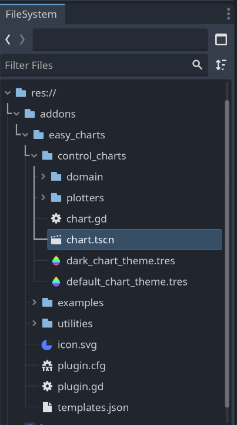
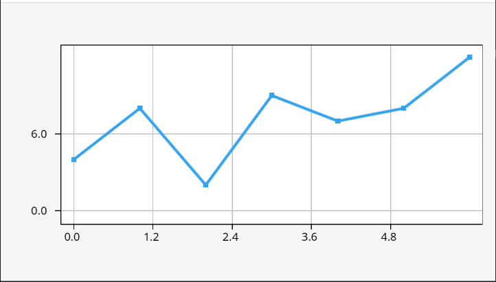
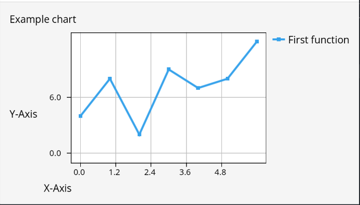

Getting started
After you installed easy-charts, it is time to create your first chart.
Basic scene setup
Since charts are control-node based, create a new Control node scene. To keep this example simple, we will create the Chart as a direct child of our scene root. For real use-cases, you can create charts in any deeply nested Control or Container structure. The Chart will adjust and draw properly.
Create a chart control
To create the chart, you have to instantiate the scene located at addons/easy_charts/control_charts/chart.tscn.

You can either do this via drag & drop into the scene tree or by instantiating the scene via script:
extends Control
func _ready() -> void:
var chart_scene: PackedScene = load("res://addons/easy_charts/control_charts/chart.tscn")
var chart: Chart = chart_scene.instantiate()
add_child(chart)
When running this, you will see an empty chart with placeholders for axis and title labels. On the output, you will see two errors indicating that an empty chart cannot be drawn. We will fix this in the next step!
Defining functions
To fill your chart with plots, you have to define Function objects and pass them to the Chart.plot(...) function. Functions have to be defined in code. Add the following code at the bottom of the _ready() function defined in the previous section:
var function := Function.new(
[0, 1, 2, 3, 4, 5, 6], # The function's X-values
[4, 8, 2, 9, 7, 8, 12], # The function's Y-values
"First function", # The function's name
{
type = Function.Type.LINE, # The function's type
marker = Function.Marker.SQUARE, # Some function types have additional configuraiton
color = Color("#36a2eb"), # The color of the drawn function
}
)
chart.plot([function])
The first two parameters of the constructor define the x- and y-values used for drawing. The next parameter defines the name of the function which is used in legend and tooltips. The last parameter is a Dictionary defining the type of the plot (a line chart in this example) and additional optional parameters (e.g. marker types and colors).
Running the scene should give you a view similar to this:

To add multiple plots to the same chart, create multiple Function objects and pass them as part of the array.
Additional configuration with ChartProperties
The Chart.plot() funciton takes a second parameter of type ChartProperties. This can be used to further customize the chart. For example, you can define axis labels and enable the legend by adding the following properties and passing them to the plot function:
var chart_properties := ChartProperties.new()
chart_properties.x_label = "X-Axis"
chart_properties.y_label = "Y-Axis"
chart_properties.title = "Example chart"
chart_properties.show_legend = true
chart.plot([function], chart_properties)
The result should look as follows:

A note about theming
The
ChartPropertiesalso contains settings to control drawing of the chart, like background colors, grids and ticks. However, these are deprecated in favor of using aTheme. See Theming for details.
Putting it all together
The full script of this introduction looks like this:
extends Control
func _ready() -> void:
var chart_scene: PackedScene = load("res://addons/easy_charts/control_charts/chart.tscn")
var chart: Chart = chart_scene.instantiate()
add_child(chart)
var function := Function.new(
[0, 1, 2, 3, 4, 5, 6], # The function's X-values
[4, 8, 2, 9, 7, 8, 12], # The function's Y-values
"First function", # The function's name
{
type = Function.Type.LINE, # The function's type
marker = Function.Marker.SQUARE, # Some function types have additional configuraiton
color = Color("#36a2eb"), # The color of the drawn function
}
)
var chart_properties := ChartProperties.new()
chart_properties.x_label = "X-Axis"
chart_properties.y_label = "Y-Axis"
chart_properties.title = "Example chart"
chart_properties.show_legend = true
chart.plot([function], chart_properties)